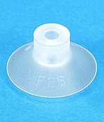
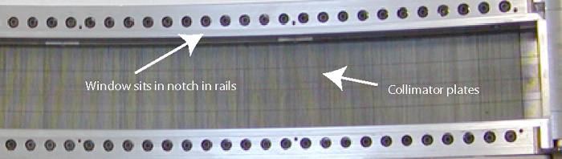

Illustration 4: Window Removal

| NOTE: | A conductive adhesive is used to hold the window in place
that still allows the window to be removed. You will need to use a small thin flat blade screwdriver to start to pull up the window. A suction cup, if available, works very well in this instance. If using a thin blade screwdriver, it is best to use it around the module 54 area. |
Illustration 3: Suction cup example

Illustration 4: Window Removal
Illustration 5: Detector Collimator Plates
